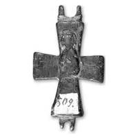

Catalog › CE-0481 · SYR2012-80
Valvă de encolpion (revers), cat. 80, NMIU Kiev
sec. XI–XII (1001–1200) · loc necunoscut · Muzeul Național de Istorie a Ucrainei (НМИУ), Kiev, inv. в 4625/737 (19245, 509 – cu vopsea uleioasă albă; 799 – cifre negre pe fond alb)
single valve of a reliquary cross, altul; c. XI–XII (1001–1200); find spot unknown; kept at Muzeul Național de Istorie a Ucrainei (НМИУ), Kiev.


Identificare
- Categorie
- Valvă izolată
- Material
- Altul
- Tehnică
- Turnare în relief; Gravare (incizie)
- Dimensiuni
- Î 54 × L 41 × Gr 7 mm
Iconografie
- Revers
- Maica Domnului cu Pruncul
- Descriere revers
- În exterior, imagine în relief pe jumătate ștearsă a Maicii Domnului în picioare, cu Pruncul în poală. Pe capetele laterale, inițial, probabil, erau înscrise inscripții adâncite pe două rânduri, din care au rămas liniile orizontale de separare.
Datare și atribuire
- Datare
- sec. XI–XII (1001–1200)
- Tipologie
- Maica Domnului cu Pruncul în relief, pe jumătate ștearsă
Descoperire
- Context
- Colecție (fără context)
- Coordonate
- 50.4536° N, 30.5164° E
- Precizia locului
- Loc de păstrare (loc de descoperire incert)
Păstrare și referințe
- Colecție
- Muzeul Național de Istorie a Ucrainei (НМИУ), Kiev
- Nr. inventar
- в 4625/737 (19245, 509 – cu vopsea uleioasă albă; 799 – cifre negre pe fond alb)
- Bibliografie
- A. A. Пескова, Л. В. Строкова, Христианские древности Византии в «Сирийской коллекции» Б. И. и В. Н. Ханенко, Sankt-Petersburg–Kiev, 2012, 225 p. [Peskova, Strokova 2012], p. 195, cat. nr. 80, ilustrația (fotografie și desen) de la p. 195.
- Figura
- ilustrația la cat. nr. 80
- Planșe
- Peskova, Strokova 2012, p. 195
- Observații
- Valva posterioară a unei cruci-relicvar cu brațe drepte, puțin evazate; interior neted, adânc, cu rebord ușor teșit. Autoarele indică o valvă analogă, turnată dintr-un aliaj de plumb și cositor (?), găsită la Praga (Muzeul orașului Praga, inv. 436), de aceleași dimensiuni, datată larg în sec. XI–XII sau, mai strâns, în a doua jumătate a sec. XI (Nechvátal 1979, p. 218, fig. 2: 1). Pe fotografie se vede o etichetă cu numărul 509. Dimensiuni în sursă (în paranteză, înălțimea cu urechile): 5,35 (7,1)×4,1 cm; grosime 0,4–0,7 cm. Atribuirea autoarelor: Bizanț sau Rusia veche, sec. XI–XII. Locul descoperirii nu este dat în sursă; aparține anexei II (cruci pectorale de proveniență necunoscută din colecția НМИУ). Material în sursă: aliaj de cupru. Locul descoperirii nu e cunoscut cu precizie; punctul de pe hartă marchează locul de păstrare (Muzeul Național de Istorie a Ucrainei), nu locul descoperirii. Coordonate: nu sunt date în sursă.
Citare: Corpus Encolpiorum, CE-0481, Valvă de encolpion (revers), cat. 80, NMIU Kiev, https://vitaliejosanu1979-ux.github.io/primul-meu-proiect/piese/SYR2012-80/ (accesat 2026-10-17).